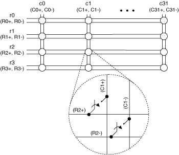
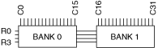

The NI TB-2634 or the NI TB-2636 terminal block creates a 2-wire 4×32 matrix topology with the NI PXI/PXIe-2529 (NI 2529). The following figure represents the NI 2529 in the 2-wire 4×32 matrix topology.
|  |
|
The NI 2529 combined with the NI TB-2634 or the NI TB-2636 creates a 4×32 matrix. In this topology, you can connect any row to any column. When connecting signals to r1, you would connect them to R1+ and R1– in the terminal block. When connecting signals to c0, you would connect them to C0+ and C0– in the terminal block.
You can connect the channels of the NI 2529 using the niSwitch Connect Channels VI or the niSwitch_Connect function. For example, to connect row 1 to column 1, call the niSwitch Connect Channels VI or the niSwitch_Connect function with the channel 1 parameter set to r1 and the channel 2 parameter set to c1.
When scanning the NI 2529 in 4×32 matrix topology, a typical scan list entry could be r1->c20;. This entry routes the signal connected to row 1 to column 20.

The NI TB-2634 and NI TB-2636 terminal blocks configure the NI 2529 as a 2-wire 4×32 matrix.
The following table lists the NI 2529 pins and their associated column connections. Refer to the NI 2529 pinout for pin locations.
| Connection | Pins | Connection | Pins | Connection | Pins | Connection | Pins |
|---|---|---|---|---|---|---|---|
| C0+ | B24 | C8+ | B19 | C16+ | B14 | C24+ | B9 |
| C0- | A24 | C8- | A19 | C16- | A14 | C24- | A9 |
| C1+ | B23 | C9+ | B18 | C17+ | B13 | C25+ | B8 |
| C1- | A23 | C9- | A18 | C17- | A13 | C25- | A8 |
| C2+ | B22 | C10+ | B17 | C18+ | B12 | C26+ | B7 |
| C2- | A22 | C10- | A17 | C18- | A12 | C26- | A7 |
| C3+ | B21 | C11+ | B16 | C19+ | B11 | C27+ | B6 |
| C3- | A21 | C11- | A16 | C19- | A11 | C27- | A6 |
| C4+ | C24 | C12+ | C19 | C20+ | C14 | C28+ | C9 |
| C4- | D24 | C12- | D19 | C20- | D14 | C28- | D9 |
| C5+ | C23 | C13+ | C18 | C21+ | C13 | C29+ | C8 |
| C5- | D23 | C13- | D18 | C21- | D13 | C29- | D8 |
| C6+ | C22 | C14+ | C17 | C22+ | C12 | C30+ | C7 |
| C6- | D22 | C14- | D17 | C22- | D12 | C30- | D7 |
| C7+ | C21 | C15+ | C16 | C23+ | C11 | C31+ | C6 |
| C7- | D21 | C15- | D16 | C23- | D11 | C32- | D6 |
The following table lists the NI 2529 pins that the NI TB-2634 and NI TB-2636 short and the row connections created.
| Connection | Pins | Connection | Pins | Connection | Pins | Connection | Pins |
|---|---|---|---|---|---|---|---|
| R0+ | B25,B15 | R1+ | C25,C15 | R2+ | B20,B10 | R3+ | C20,C10 |
| R0- | A25,A15 | R1- | D25,D15 | R2- | A20,A10 | R3- | D20,D10 |
The following figure identifies the pins for the NI 2529.

 |
Caution Do not connect to RESERVED pins or to NO CONNECT pins. Keep low-voltage pins isolated from row and column channels when high voltage is present. |